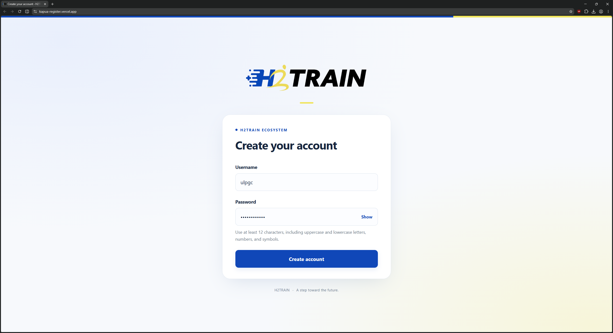
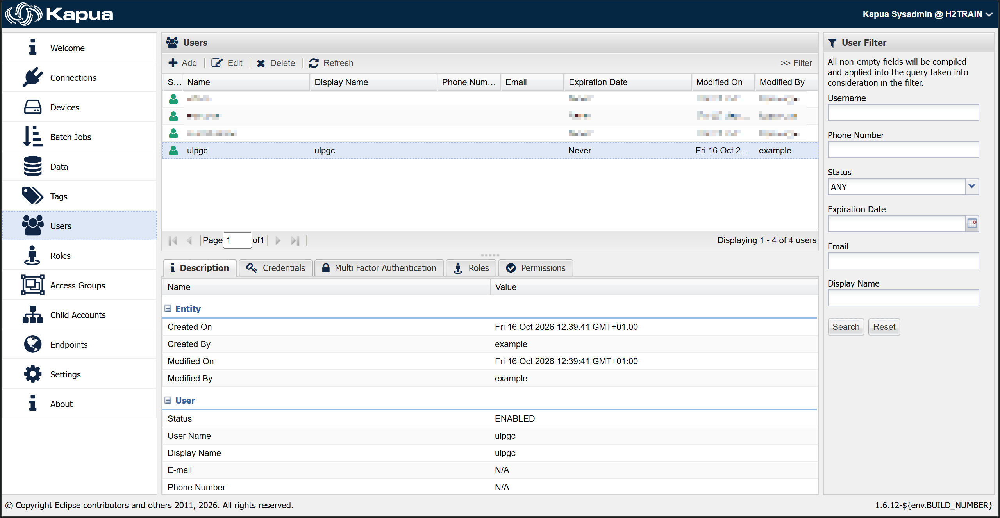
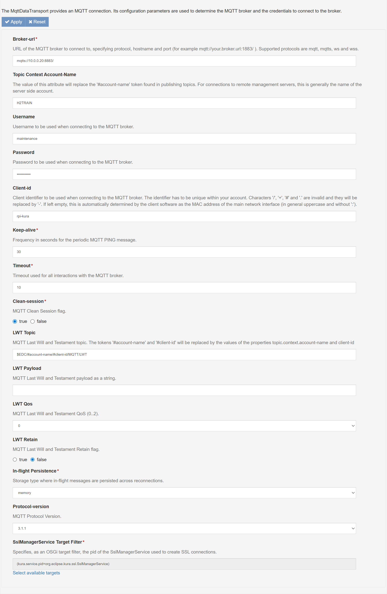
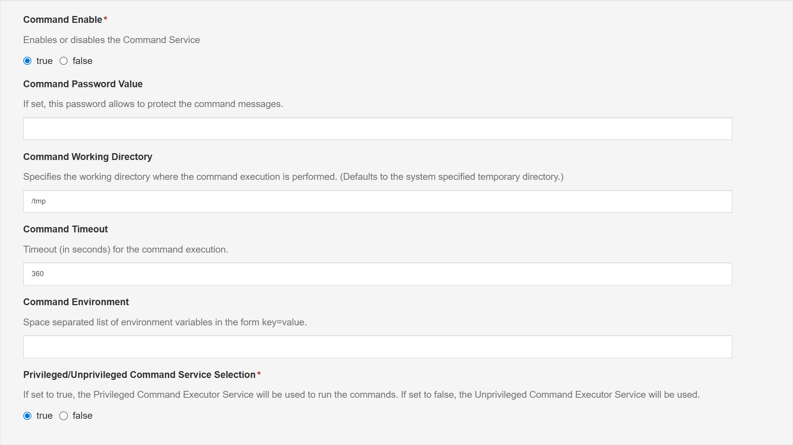

4. Connecting to Cloud Multiplatform H2Train with Eclipse Kapua
This chapter describes how to register a Kapua user and configure Eclipse Kura for device maintenance through Cloud Multiplatform H2Train. Complete the steps in the order presented, using the connection settings for the deployment described below.
4.1 Register a Kapua User
Before configuring the device, create a user on the Kapua server through the Kapua registration page. This application is hosted on Vercel and uses the Kapua API to create new users.
- Open the registration page.
- Enter a username and choose a password.
- Submit the registration form. The system assigns the user's role automatically.
The following example shows the registration of a user named ulpgc with a
password chosen by the user.

Once registration is complete, confirm in the Kapua administration console that the user has been created successfully, as illustrated below.

Registration provides each user with individual credentials for broker authentication. The maintenance connection configured in section 4.5 uses a dedicated maintenance account with its own roles and permissions.
4.2 Import the SSL Certificate into Kura
Download the SSL certificate provided in the deployment certificate Gist. Then import it through the Kura administration console:
- Open the Security section.
- Select Add, then Certificate.
- Select SSLKeystore as the destination keystore.
- Select the downloaded certificate file and complete the import.
The certificate is used to establish trust for the secure connection to the broker.
4.3 Create the Maintenance Cloud Connection
In the Kura administration console, open Cloud Connections and select New Connection. Configure the connection as follows:
| Field | Value |
|---|---|
| Cloud Connection Factory PID | org.eclipse.kura.cloud.CloudService |
| Cloud Connection Service PID | org.eclipse.kura.cloud.CloudService-Maintainer |
Create the connection, then continue with its data service configuration.
4.4 Enable Automatic Connection at Startup
Open the DataService-Maintainer section of the new cloud connection.
- Set Connect Auto-on-Startup to
true. - Select Apply to save the changes.
- Open MqttDataTransport-Maintainer to configure the broker connection.
4.5 Configure the MQTT Transport
Configure MqttDataTransport-Maintainer using the values shown below and in the accompanying screenshot.
| Field | Value |
|---|---|
| Broker-url | mqtts://10.0.0.20:8883/ |
| Topic Context Account-Name | H2TRAIN |
| Username | maintenance |
| Password | 1234 |
| Client-id | rpi-kura, or another identifier unique within the account |
| Keep-alive | 30 seconds |
| Timeout | 10 seconds |
| Clean-session | true |

Use the dedicated maintenance account for this connection. Its roles and
permissions are intended for maintenance-related communication. Enter 1234
as the password for the deployment described in this chapter.
The Client-id may be changed to identify the device. Keep all other settings as shown in the screenshot, then select Apply to save the configuration.
4.6 Configure the Command Service
Select CommandService in the left navigation panel. Configure the service
as shown in the following screenshot, entering 1234 in Command Password Value.
| Field | Value |
|---|---|
| Command Enable | true |
| Command Password Value | 1234 |
| Command Working Directory | /tmp |
| Command Timeout | 360 seconds |
| Command Environment | Leave empty |
| Privileged/Unprivileged Command Service Selection | true |

Keep the remaining settings as shown and select Apply to save the changes.
4.7 Configuration Outcome
These steps complete the Kura configuration for device maintenance in the described deployment. User registration provides individual broker credentials, while the dedicated maintenance cloud connection and Command Service provide the configuration needed for a Kapua administrator to carry out remote maintenance operations, including application updates.